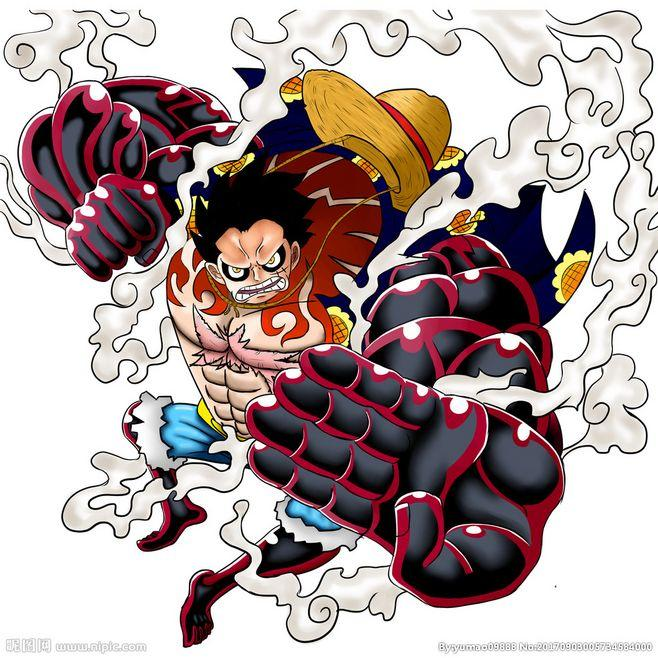

路飞
路飞基本介绍
蒙奇·D·路飞，日本漫画《航海王》及其衍生作品中的男主角。外号“草帽”路飞，是草帽一伙、草帽大船团船长，极恶的世代之一。橡胶果实能力者，悬赏金15亿贝里。梦想是找到传说中的One Piece，成为海贼王。
路飞性格积极乐观，爱憎分明，宁死不屈，十分重视伙伴与朋友，对任何危险的事物都超感兴趣。和其他传统的海贼所不同的是，他并不会为了追求财富而杀戮，而是享受着身为海贼的冒险和自由
路飞性格
- 积极乐观，他出海不是为了钱财，而是为了享受冒险的过程，在罗格镇的断头台上即将被斩首时，在却异于常人的露出开朗的笑容，因为他早已抱有必死的觉悟
- 胸襟宽广，曾经和小八、Mr.2、贝拉米等人为敌，但现都能放下过去成为朋友与伙伴，并把他们像对待伙伴一样重视
- 注重友谊，重视伙伴，为了解救罗宾，他不惜烧穿世界政府旗帜，与世界政府为敌
- 极具王者气概，即使面对海军大将与四皇也毫无敬畏，认定海上的王者只有自己
路飞的战斗技巧
- “二档”是“橡胶人”独有的招式，发动后，路飞的皮肤会变得通红并冒出蒸气，如同使用兴奋剂一般。路飞以脚做为泵打气（两年后能以手做为泵打气），借此加速血液的流动，强化身体的强度
- “三档”是“橡胶人”独有的招式，发动时，路飞会咬住大拇指，将空气吹入骨头的空隙中，操纵其名为“骨气球”的战斗招式，使身体的一部分巨大化
- “三档”拥有破坏力媲美巨人族的力量，基本招式经过“三档”的强化能够变成极为强力的招式。但是三档会使攻击的速度下
- “四档”是“橡胶人”独有的招式。发动时，路飞先使用武装色霸气武装手臂，然后咬住手臂并将空气吹入手臂中，操纵其名为“肌肉气球”的战斗招式，将空气压缩进体内拥有弹力和巨体
- “四档”是路飞在修行的两年间跟那些大得像怪物一样的猛兽们战斗，为了降服他们而开发出的新招式。此状态下的路飞具备了强壮的巨体和充足的弹力，甚至能用弹力在空中飞行
- “四档”后不能正常地站立，只能利用橡胶的弹力弹起来。实力全面提升，比二档速度更快，比三档力量和防御更强
>
战斗招式
| 招式名 | 介绍 |
|---|
| 橡胶火拳铳 | 发出火焰的一拳，威力巨大 |
| 橡胶火拳炮 | 三档下发出火焰的一拳，威力巨大 |
| 橡胶火箭炮 | 发出火焰的连续拳，威力巨大 |
| 橡胶步枪 | 缠绕武装色并且蓄力的一拳，威力巨大 |
